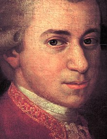
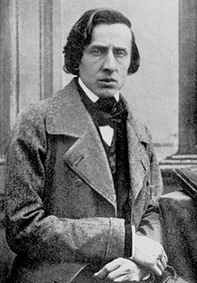

MUZIKA KLASIKE
Muzika klasike në përgjithësi i referohet muzikës së artit të botës perëndimore, e cila konsiderohet të jetë
e dallueshme nga muzika popullore perëndimore ose traditat e muzikës popullore. Ndonjëherë dallohet si muzikë
klasike perëndimore, pasi termi "muzikë klasike" vlen edhe për muzikën e artit joperëndimor. Muzika klasike
shpesh karakterizohet nga formaliteti dhe kompleksiteti në formën e saj muzikore dhe organizimin harmonik,
veçanërisht me përdorimin e polifonisë. Të paktën që nga shekulli i nëntë, ajo ka qenë kryesisht një traditë
e shkruar, duke krijuar një sistem të sofistikuar shënimesh, si dhe literaturë shoqëruese në praktikat
analitike, kritike, historiografike, muzikologjike dhe filozofike. Një komponent themelor i kulturës
perëndimore, muzika klasike shihet shpesh nga perspektiva e individit ose grupeve të kompozitorëve,
kompozimet, personalitetet dhe besimet e të cilëve kanë formësuar rrënjësisht historinë e saj.
Disa nga artistet me te famshem:
- Mozart
- Beethoven
- Chopin
- Brahms
- Bach
- Vivaldi
- Giuseppe Verdi
- Rossini
Mozart
Wolfgang Amadeus Mozart ishte një kompozitor me ndikim i periudhës klasike. Pavarësisht jetës së tij të shkurtër,
ritmi i tij i shpejtë i kompozimit rezultoi në më shumë se 800 vepra të pothuajse çdo zhanri të kohës së tij.
Shumë nga këto kompozime njihen si kulme të repertorit simfonik, koncertante, dhome, operistik dhe koral. Mozart
konsiderohet gjerësisht si ndër kompozitorët më të mëdhenj në historinë e muzikës perëndimore, me muzikën e tij
të admiruar për "bukurinë e saj melodike, elegancën e saj formale dhe pasurinë e saj të harmonisë dhe teksturës".

Beethoven
Ludwig van Beethoven ishte një kompozitor dhe pianist gjerman. Beethoven mbetet një nga kompozitorët më të admiruar në
historinë e muzikës perëndimore; veprat e tij renditen ndër më të interpretuarat e repertorit të muzikës klasike dhe
përfshijnë kalimin nga periudha klasike në epokën romantike në muzikën klasike. Karriera e tij konvencionalisht është
ndarë në periudha të hershme, të mesme dhe të vonshme. Periudha e tij e hershme, gjatë së cilës ai falsifikoi zanatin
e tij, zakonisht konsiderohet se ka zgjatur deri në vitin 1802. Nga viti 1802 deri në rreth 1812, periudha e tij e
mesme tregoi një zhvillim individual nga stilet e Joseph Haydn dhe Wolfgang Amadeus Mozart, dhe nganjëherë karakterizohet
si heroike . Gjatë kësaj kohe, ai filloi të bëhej gjithnjë e më i shurdhër. Në periudhën e tij të vonë, nga 1812 deri në
1827, ai zgjeroi risitë e tij në formën dhe shprehjen muzikore.

Chopin
Frédéric François Chopin ishte një kompozitor dhe pianist virtuoz polak i periudhës romantike, i cili shkroi kryesisht për
piano solo. Ai ka ruajtur famë botërore si një muzikant kryesor i epokës së tij, i cili "gjeniu poetik i të cilit bazohej
në një teknikë profesionale që nuk ishte e barabartë në brezin e tij".
